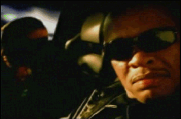

Poppin' and Loading
Global Hip-Hop est une radio géographique qui vous propose une promenade dans le rap mondial via un globe musical interactif. L'idée est de montrer que le rap, loin de se résumer aux Etats-Unis et à l'Europe, est une musique mondiale, qui se pratique dans tous les pays et dans toutes les langues.
Deux règles : un seul morceau par artiste et des morceaux dans la langue du pays. Sinon, aucune restriction concernant le style de rap, ou l'époque.
Bonnes découvertes, bonne écoute !
Une fois la chanson sélectionnée, choisissez vos paramètres de lecture
now playing
Nom de l'atiste
Ceci est le nom du track
(J'appelle mon album as I want, 2000)
Belgrade-Zoo (Hongrie)
paramètres de lecture
Rester sur le même continentCliquer sur un pays ou un point du globe pour afficher les chansons.
Cliquez sur les morceaux pour lancer la lecture
Réinitialiser le trajet
Voir la liste
Proposer un son
Remerciements
Clara Dealberto et Jules Grandin